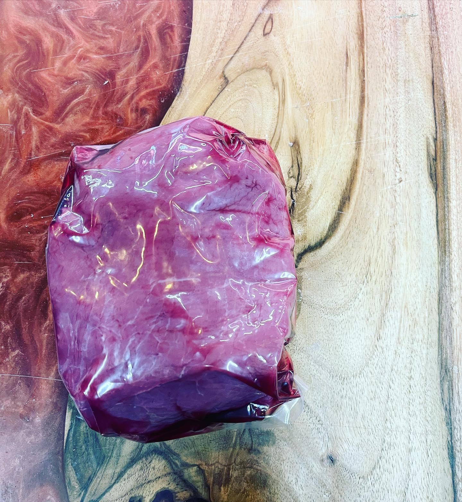

Teľacie mäso podľa @farmhouse.sk — Normy Jedál
Pri teľacinke dnes ešte ostaneme 😉 Na fotke môžete vidieť teľacie zadné. 🥩🔥 Je to mäsko s veľmi lahodnou a príjemnou chuťou. Okrem iného má jemnučkú konzistenciu, nízky osbash tuku a je vhodné aj pre malé ratolesti 👶🏼
V našej ponuke nájdete širokú škálu teľacieho mäsa. Ponúkame močing, sviečkovú, falošnú sviečkovú, vyzretú sviečkovú, pliecko, rebrá, zadné, krk bez kosti a samozrejme teľacie steaky ako Rump 🥩, Rib eye 🥩, Tom and Jerry 🥩, Tomahawk 🥩 či Top sirloin 🥩 . Zakúpiť u nás môžete aj detské teľacie mäsko či mäsko v BIO kvalite.
#farmhouse #farmhouseteam #food #meat #calf #butchershop #foodlover #meatlover #calflover #foodinspo #inspiration #foodporn #quality #slovakoroducts #foodcoma #masiarstvo #prsveslovenske #telaciemaso #telacina #jedlo #mason#milujemmaso #nakupujemkvalitu #domanakupujem